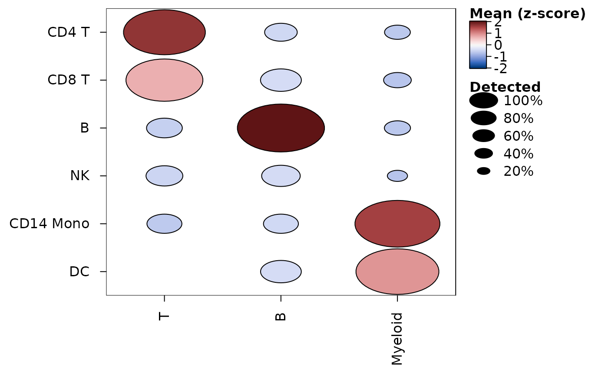

heat_map_score() scores each cell for each of several sets of
features (e.g. the genes of pathways or cell types), so that a heatmap or
dot plot can show a few scores in place of hundreds of genes. The scores
are returned with the metadata of the cells, so they can be drawn and
summarised like any other single-cell data:
heat_map(scores, group_by = "cell_type"),
heat_map_dot(scores, group_by = "cell_type") or
heat_map_summarise(scores, group_by = "cell_type").
Usage
heat_map_score(
x,
sets,
assay = NULL,
method = c("zscore", "mean", "module"),
bins = 30,
controls = 100,
seed = 1,
min_size = 1
)Arguments
- x
single-cell data: a SingleCellExperiment, SummarizedExperiment or Seurat object, a sparse matrix or a matrix or data.frame of cells by features (see
heat_map).- sets
a named list of sets of features, each a vector of the names of features of
x(or of their gene symbols); a single vector is one set. Features that aren't inxare left out with a message; a set with fewer thanmin_sizefeatures inxis an error. The markers returned byheat_map_markersgive one set per group (its top markers).- assay
the values of single-cell data to score (see
heat_map).- method
"zscore"(default),"mean"or"module"(see Details).- bins, controls
the number of bins of features by mean expression and of control features drawn for each feature of a set, for
method = "module", set to 30 and 100 by default as Tirosh et al. (2016) chose them.- seed
the seed of the random numbers that draw the control features (R's own seed is left as it was).
- min_size
the fewest features of a set that must be in
x, set to 1 by default.
Value
a numeric matrix with one row per cell (named by the cells) and
one column per set (named by the sets), whose attribute "groups"
holds the metadata of the cells (a data.frame, read by group_by,
split_by and annotation_by), "sets" the features of
each set that were scored, "method" the score and, for
method = "module", "controls" the control features of each
set.
Details
Three scores are computed in compiled code from the non-zero values of sparse data, without a dense copy:
"zscore"(the default): the mean of the set's features after each is z-scored across the cells, so that every feature counts the same whatever its level of expression. Features that don't vary are left out."mean": the mean of the values of the set's features."module": the mean of the set's features less the mean of control features of similar expression, as Tirosh et al. (2016) score gene sets (and as Seurat'sAddModuleScore()does). All the features ofxare put intobinsbins of equal size by their mean across the cells and, for each feature of the set,controlsfeatures are drawn from its bin (other features of the set left out), with a fixedseed, so the scores are the same every time. A score above zero means more expression than features of the same level generally have.
Missing values are left out of a cell's mean.
References
Tirosh, I., Izar, B., Prakadan, S. M., Wadsworth, M. H., Treacy, D., Trombetta, J. J., et al. (2016). Dissecting the multicellular ecosystem of metastatic melanoma by single-cell RNA-seq. Science, 352(6282), 189-196. doi:10.1126/science.aad0501
Examples
cells <- heat_map_example("rna", n = 600)
scores <- heat_map_score(
cells,
sets = list(
T = c("CD3E", "IL7R", "CD8A"),
B = c("MS4A1", "CD79A", "CD79B"),
Myeloid = c("LYZ", "S100A8", "S100A9", "FCER1A")
)
)
head(scores)
#> T B Myeloid
#> [1,] 0.4632102 -0.5062965 -0.08970280
#> [2,] -0.6953592 -0.5062965 0.93542927
#> [3,] 0.1853203 -0.5062965 -0.09407217
#> [4,] 0.2046225 -0.5062965 -0.28297060
#> [5,] 0.9936920 -0.5062965 -0.61497429
#> [6,] -0.6953592 -0.5062965 -0.22564054
# A dot plot of the scores of each cell type
heat_map_dot(scores, group_by = "cell_type", popup = FALSE)
